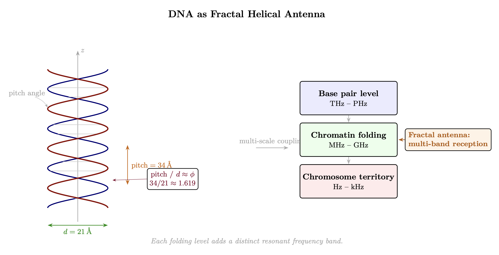

Chapter 6: Biofield and DNA Antenna System
The Adaptive Torsion Transceiver
KEY FINDINGS — Chapter 6: Biofield and DNA Antenna System
Evidence-tier key: [L1] established/replicated evidence; [L2] grounded extension with moderate uncertainty; [L3] speculative hypothesis; [L4] conceptual/anecdotal.
- [L1-HIGH]DNA’s helical geometry produces measurable THz resonances corresponding to geometric parameters at multiple folding scales, confirmed by Markelz et al. spectroscopy data.
- [L2-MEDIUM]Epigenetic research (Meaney, Yehuda, Kaliman, Bhasin) confirms that coherent practices produce stable DNA modifications, supporting the ratcheting mechanism’s biological substrate.
- [L2-MEDIUM]Bioelectric field research (Levin lab) demonstrates that field-level information can override genomic instructions, supporting the biofield-DNA integration model.
- [L3-SPECULATIVE]The magnonic framework mapping condensed matter spin-wave physics onto DNA structure provides a testable but experimentally unverified model for torsion field transduction.
- [L3-SPECULATIVE]The soul-DNA matching model (impedance resonance between soul signature and DNA antenna geometry) is metaphysical and not testable by current experimental methods.
_________________________________
6.1 RF Analogy Overview
6.1.1 The Core Concept
Every RF system needs a front-end transducer and an antenna—the components that convert field energy into signals the system can process, and vice versa. Without transduction, the signal exists but cannot be utilized.
The biofield and DNA together form an adaptive torsion antenna system that:
- 1.
- Receives torsion field patterns (morphic templates)
- 2.
- Transduces them into cellular/biological signals
- 3.
- Broadcasts integrated experience patterns back into the field
- 4.
- Adapts its geometry based on accumulated signal/experience
Critical framing: This chapter extends the RLC model from Chapter 5, providing a biophysics-level concrete refinement. Where Chapter 5 modeled the soul as a nonlinear RLC circuit determining resonance characteristics, this chapter examines how those characteristics are physically instantiated through DNA and the biofield.
The hierarchy:
- Soul (RLC circuit): The consciousness-level tuned receiver with macro parameters L, C, R determining Q, Z\(_0\), and f\(_0\). These represent system-level characteristics.
- Body/Organism: The physical vessel—biofield, cellular systems, nervous system—through which DNA’s antenna function is expressed and through which experience is processed. The body provides the local field environment (biofield) and the experiential interface that generates novel patterns for rebroadcast.
- DNA (Adaptive antenna): The biophysical mechanism containing all the micro subcomponents and circuits that collectively instantiate the soul’s macro parameters. DNA transduces torsion patterns and locks in impedance gains through geometric reconfiguration.
The soul’s macro RLC parameters (Chapter 5’s system-level view) are actually comprised of countless micro parameters distributed throughout DNA’s structure. Soul age (Chapter 5, Section 2.8) represents the accumulated macro RLC development across incarnations. DNA provides the biological instantiation—the physical antenna whose micro-level configurations aggregate into the soul’s tuned parameters and ratchet those gains into stable geometric configurations.
6.1.2 The Antenna-Shaping Function
Source’s broadcast also shapes the antenna itself. The signal doesn’t just pass through the receiver—it forms and maintains the receiver’s structure. The morphogenetic field contains the blueprint for the very antenna designed to receive it.
This is recursive: transmission shapes receiver \(\rightarrow \) receiver receives transmission more clearly \(\rightarrow \) further refines receiver \(\rightarrow \) …
6.1.3 DNA as TRUE TRANSCEIVER
A critical distinction: DNA is not just a receiver—it’s a transceiver (transmitter + receiver):
Torsion field (templates) \(\rightarrow \) DNA receives via helical antenna \(\rightarrow \) Experience processed through organism \(\rightarrow \) Novel patterns generated through lived experience \(\rightarrow \) DNA geometry adapts (ratchets to new configuration) \(\rightarrow \) DNA rebroadcasts into torsion field \(\rightarrow \) New templates available to other receivers (Akashic accumulation)
The effectiveness of this transceiver loop depends on the local field environment—the biofield—which we examine next.
_________________________________
6.2 The Biofield: Local Torsion/EM Environment
6.2.1 What is the Biofield?
The biofield is the local torsion/electromagnetic field generated by and surrounding the organism:
- Extends DNA’s effective aperture
- Provides the near-field environment for biological processes
- Interfaces between cellular processes and the ambient torsion field
- Coherent biofield = stronger transmission/reception
The biofield represents the local component of an ambient torsion field that is itself nonlocal. The organism generates its own torsion field locally while also coupling to the nonlocal ambient field—analogous to how a radio antenna generates a local near-field while coupling to distant transmissions.
6.2.2 Biofield Components
|
Component | Physical Basis | Function |
|
Heart field | Toroidal blood flow, cardiac electrical | Primary torsion generator |
|
Brain field | Neural electromagnetic activity | Information processing interface |
|
Meridian system | Ion gradients, fascia conduction | Field distribution network |
|
Chakra zones | Electromagnetic nodes, nerve plexi | Local field concentrators |
6.2.3 Bioelectric Gradients
The body maintains DC voltage gradients:
- Cell membrane: -70mV (inside negative)
- Organ-level: measurable mV differences
- Whole-body: head-to-foot potential
This gradient is the DC bias that sets the operating point: \[ V_{operating} = V_{bias} + v_{signal}(t) \] Disrupted gradients (injury, disease) shift the operating point, changing transduction efficiency.
6.2.4 The Transduction Equation
General transduction from torsion field \(T\) to biological signal \(B\): \[ B(t) = \int \eta _T(\omega ) \cdot T(\omega ) \cdot e^{j\omega t} \, d\omega \] Where \(\eta _T(\omega )\) is the torsion transduction efficiency—the frequency-dependent effectiveness of converting torsion field to biological signal.
_________________________________
6.3 DNA as Adaptive Helical Antenna
6.3.1 DNA Antenna Geometry
The DNA double helix is a natural helical antenna:
|
Parameter | DNA Value | Antenna Implication |
|
Length | ~2m per cell (extended) | Large effective aperture |
|
Pitch | 3.4 nm per turn | THz-range primary resonance |
|
Diameter | 2 nm | Determines circumference/wavelength ratio |
|
Turns | ~200 million | Extremely high gain potential |
|
Phi ratio | 34Å pitch / 21Å diameter \(\approx \) \(\phi \) | Optimal information packing |

6.3.2 Fractal Bandwidth Extension
DNA’s recursive coiling (helix \(\rightarrow \) nucleosome \(\rightarrow \) chromatin \(\rightarrow \) chromosome) creates fractal antenna geometry: \[ BW_{total} = BW_0 \cdot \sum _{n=0}^{N} \alpha ^n \] Each folding level contributes additional bandwidth at progressively lower frequencies:
| Folding Level | Structure | Added Frequency Range |
| Primary | Double helix | THz-PHz |
| Secondary | Nucleosome | GHz |
| Tertiary | 30nm fiber | MHz |
| Quaternary | Chromatin loop | kHz |
| Chromosome | Condensed | Hz |
This allows reception across a broad range of torsion frequencies—from molecular (THz) to consciousness-scale (Hz).
6.3.3 Torsion Generation and Reception
DNA’s helical geometry is optimized for torsion field interaction:
- Generation Rotating charge distributions along the helix create torsion fields
- Reception Torsion field patterns induce vibrational modes in the helix
- 10.5 base pairs per turn Creates specific torsion frequency signature
- Fractal folding Multi-scale torsion resonances
Dual coupling mechanism:
- EM coupling — Local, speed-of-light limited (biological processes)
- Torsion coupling — Nonlocal in the model framework (see Chapter 0 for the distinction between torsion-as-Einstein-Cartan and torsion-as-consciousness-field)
DNA uses BOTH simultaneously. This explains phenomena like Gariaev’s “wave genetics” results (if validated).
Section 3 established DNA’s geometric properties as an antenna. The next step is modeling the electrical and magnonic behavior that this geometry produces—mapping antenna characteristics to circuit parameters (L, C, R) that determine resonance, selectivity, and impedance matching.
_________________________________
6.4 DNA as Magnonic RLC Antenna: The Biophysical Framework
6.4.1 Framework Overview: DNA as Magnonic Transducer
Core thesis: The human DNA complex functions as a sophisticated magnonic transducer—an RLC antenna interfacing the individual body with the soul and, through the soul, with the universal torsion field. DNA and soul form a matched pair: specific genetic configurations resonate with specific soul signatures. This soul-DNA pairing explains the historical power of bloodlines—DNA is the key that unlocks access to advanced soul characteristics. Spiritual evolution = impedance matching engineering.
This framework provides the biophysical instantiation of Chapter 5’s soul RLC model. Where Chapter 5 describes the consciousness-level parameters, this section details how those parameters manifest through DNA’s mechanical and electromagnetic properties.
What “magnonic” means here: In condensed matter physics, magnons are quantized spin waves—collective excitations propagating through ordered magnetic lattices. DNA’s helical charge distribution, with its rotating electron densities and hydrogen-bond networks, creates a quasi-ordered spin system through which collective excitations can propagate. We extend the magnonic framework analogically: DNA’s double helix acts as a spin-wave waveguide where torsion-coupled spin excitations behave like magnons in a crystal lattice.
Model Note: This magnonic framing is an analogical extension from condensed matter physics to biophysics. The mathematical parallels (spin stiffness \(\leftrightarrow \) inductance, anisotropy \(\leftrightarrow \) capacitance, damping \(\leftrightarrow \) resistance) are physically motivated by DNA’s helical geometry, but direct experimental confirmation of magnonic propagation in biological DNA remains to be demonstrated. The framework is chosen for its explanatory power and testability, not claimed as established biophysics.
Epistemic note [L2-L3]: The magnonic framework maps condensed matter physics concepts onto DNA structure. While spin waves in solid-state systems are well-established, their application to biological DNA is speculative and experimentally unverified.
Key parameter mapping:
|
Parameter | Electrical (RLC) | Mechanical | Magnonic (Spin Lattice) | System-Level Correlate |
|
L (Inductance) | Energy storage in magnetic field | Mass/moment of inertia | Exchange interaction/spin stiffness | Soul Age — accumulated incarnational momentum; internal spin coherence |
|
C (Capacitance) | Energy storage in electric field | Compliance (1/K, spring flexibility) | Dipolar interaction/magnetic anisotropy | Shadow Age — capacity to absorb distortion; potential for external coherence |
|
R (Resistance) | Energy dissipation as heat | Viscous damping | Gilbert damping/phonon coupling | Dimensional Density — frictional decoherence of the realm |
These system-level correlates emerge from the aggregation of DNA’s micro-level parameters. Soul Age, for instance, is not a property of any single DNA configuration but the accumulated macro parameter arising from many micro-level geometric states across incarnations.
DNA provides the physical antenna whose parameters are shaped by soul age (L), shadow integration (C), and environmental density (R).
Soul-DNA resonance matching: The soul-DNA pairing is not arbitrary. A soul’s macro impedance signature (its accumulated L and C from prior incarnations) must fall within the matching bandwidth of the body’s DNA antenna. DNA with high-Q geometry (complex folding, high fractal depth) can couple to souls with correspondingly high Z\(_0\)—but a low-Z\(_0\) soul placed in high-Q DNA would experience impedance mismatch, manifesting as developmental instability or psychological fragmentation. Conversely, a high-Z\(_0\) soul in low-Q DNA cannot express its full bandwidth.
This matching constraint explains the observed power of bloodlines: lineages that have maintained specific genetic configurations (through selective reproduction, environmental adaptation, or deliberate breeding programs) preserve DNA antenna geometries capable of coupling to specific soul impedance bands. The DNA doesn’t create the soul’s characteristics—it provides the antenna geometry that allows those characteristics to manifest in physical expression. A lineage’s “power” is its DNA’s Q factor and bandwidth, determining which souls can incarnate through it and how much of their accumulated Z\(_0\) can be expressed.
This has a testable implication: genetic diversity within a bloodline should correlate with the range of soul impedance signatures it can support, while genetic bottlenecks should narrow the matching bandwidth, producing lineages specialized for particular impedance bands.
Epistemic note [L3]: The soul-DNA matching model is metaphysical and not testable by current experimental methods.
6.4.2 The Helix as Primordial Motion: Spin-Wave Coupling
The helix represents the inseparable union of spin (rotational coherence) and wave (rhythmic propagation). DNA’s double helix is frozen light—helical waves slowed and stabilized into apparent solidity.
Building on the geometric properties established in Section 3 (counter-wound strands, toroidal embedding, biophoton emission), we now examine how these structures support spin-wave propagation.
The aggregate of ~200 million turns per cell produces a coherent torsion antenna of extraordinary gain. Each turn creates a microscopic torsion vortex; the collective spin-wave coupling along the helix enables coherent propagation of torsion-coupled excitations across the full length of the DNA molecule.
The helix’s torsion-generating geometry is not fixed—its mechanical properties can be dynamically reconfigured through chromatin topology changes, providing a built-in tuning mechanism.
6.4.3 Variable Stiffness (k): Chromatin Topology as Antenna Tuner
The critical new concept: Mechanical topology (stiffness k of the chromatin network) serves as the primary “antenna tuner”—directly modulating resonance with torsion modes.
The dual system:
- Topology (k) = TUNER — sets the base resonant frequency by mechanical reconfiguration
- Impedance (Z\(_0\)) = MATCHING NETWORK — optimizes energy transfer once the tuner allows access
Stiffness dynamics:
|
Stiffness State | Configuration | Torsion Access | Consciousness Correlate |
|
High k | Compacted loops, overwound supercoils | Narrow bandwidth, low-frequency/localized modes | Egoic emotion, survival consciousness |
|
Low k | Fluid unwinding, open domains | Broad receptivity to high-frequency/nonlocal torsions | Unity consciousness, oversoul downloads |
Mechanisms for k modification:
- Phase transitions in chromatin (twist-to-writhe buckling, B-to-Z DNA flips)
- Topoisomerase activity dynamically adjusting windings
- Epigenetic marks encoding torsional “memory” (e.g., histone acetylation reducing local rigidity)
- Biophoton feedback loops stabilizing unwinding
Torsion-emotion connection: Low-frequency torsions (discordant thoughts, emotional chaos) maintain high k; high-frequency modes (coherent intent, love-based emotions) soften k. This provides the biophysical mechanism for why emotional coherence enables expanded perception.
6.4.4 The Adaptive Antenna with Hysteresis
In RF engineering, an adaptive antenna adjusts its parameters based on the signal environment. DNA extends this concept with geometric lock-in (hysteresis/ratcheting).
We use “lock-in” to describe the discrete geometric reconfiguration event and “ratcheting” to describe the cumulative directional process—each lock-in event ratchets the system to a higher impedance floor.
Standard adaptive antenna: Adjusts \(\rightarrow \) optimal reception \(\rightarrow \) can readjust when signal changes
DNA adaptive antenna: Adjusts \(\rightarrow \) optimal reception \(\rightarrow \) locks geometry \(\rightarrow \) new baseline
Key differences:
- Changes lock in—don’t regress when signal removed
- This is the “can’t unsee” phenomenon of awakening
- DNA activation = geometric reconfiguration that stabilizes at new state
- Locked geometry = permanent upgrade
6.4.5 Fractal Ratcheting: Lock-In Mechanics
Why fractal topology enables ratcheting:
- Self-similar hierarchies create rugged energy landscapes
- Low torsions trap in local minima (stiff, closed states)
- High-frequency inputs cascade through scales via cooperative unwinding
- Metastable highs have energy barriers against backsliding (directed percolation)
Topological invariants:
- Knot-like supercoils preserve twist numbers
- Enzymatic “cuts” required for reversal creates natural hysteresis
- Self-similarity distributes torque unevenly \(\rightarrow \) avalanches where small inputs trigger global shifts
How DNA locks in Z\(_0\) gains:
- 1.
- Experience/practice causes conformational changes in DNA (methylation, histone modification, chromatin remodeling)
- 2.
- Certain thresholds trigger stable geometric reconfigurations
- 3.
- New geometry enables reception of previously inaccessible frequencies/patterns
- 4.
- Locked geometry = impedance floor raised permanently \[ Z_{0,new} = \max (Z_{0,current}, Z_{0,threshold}) \] Once Z\(_0\) crosses an activation threshold, the new floor is locked:
| Activation Level | Z\(_0\) Floor | Capability |
| Baseline | Z\(_1\) | 3D perception only |
| Partial (0.3) | ~5 Z\(_1\) | 3D-4D transition access |
| Significant (0.6) | ~25 Z\(_1\) | 4D stable access |
| Full (0.9+) | ~125 Z\(_1\) | 5D access capability |
These activation levels and their Z\(_0\) ratios are illustrative, representing the model’s predicted scaling behavior. Empirical calibration of specific thresholds requires measurement of DNA geometric states correlated with reported capacity changes. The 5x scaling factor between levels is a modeling choice reflecting geometric progression; no empirical calibration exists for these specific ratios.
The ratchet functions as a Q factor increase—each lock-in sharpens resonance while building antifragile stability.
The threshold equation: \[ P_{activation} = S\left (\int _0^T I_{coherent}(t) dt - \theta _{threshold}\right ) \] Where \(S(\cdot )\) = sigmoid function, I_coherent = coherent signal intensity, \(\theta \)_threshold = activation threshold.
The sigmoid captures the probability of activation: as cumulative coherent exposure approaches the threshold, activation probability increases smoothly, but the geometric reconfiguration itself is a discrete phase transition—analogous to how temperature increases continuously but ice-to-water transition is abrupt. Once cumulative coherent exposure exceeds threshold, geometric reconfiguration triggers and locks.
6.4.6 What Triggers Geometric Reconfiguration
Accumulated signal/coherent states:
- Sustained meditation practice
- Intensive shadow work / trauma processing
- Profound experiences (mystical states, NDEs)
- Coherent group field exposure
6.4.7 Soul Age Profiles: Impedance Characteristics Across Development
Different soul ages manifest distinct impedance characteristics through their DNA antenna systems:
Young/Unactivated Souls:
- Low impedance (leaky broadband reception)
- High/variable k (clamped mechanical response)
- Prone to emotional overwhelm, rapid discharge through reactivity
- BUT: grants fluidity, movement, broad-spectrum engagement
- Properly tuned: excel as actors, athletes, aesthetes
Mature but Unactivated:
- High innate impedance (soul-refined C/L for minimal leakage)
- High k (unresolved vessel baggage blocking full expression)
- Gravitational presence without full activation
- Resistant to external capture but not fully transmitting higher torsion
Fully Activated Mature Souls:
- High impedance (selective, stable matching)
- Low k (fluid topology)
- Precision narrowband reception with expansive access when needed
- Antifragile ratcheting against entropy or external interference
- Magnetic, gravitational fields drawing coherence without bleed
6.4.8 Ascension as Impedance Matching: The Smith Chart Model
The engineering framing: Evolution = disciplined expansion of L (internal coherence) and C (external potential) until Z\(_0\)_soul matches the current environment’s impedance band, unlocking access to the next.
The Smith Chart, used in RF engineering to visualize impedance matching, provides a precise model for spiritual development. The Smith Chart plots impedance on a circular graph where the center represents perfect matching (no reflected power) and distance from center represents degree of mismatch—a visual map of how far a system is from optimal energy transfer. The chart’s center represents 1:1 SWR (standing wave ratio)—perfect matching.
Mismatched state (high SWR):
- Intent reflects back as standing waves
- Manifests as stuckness, ego flares, burnout, apathetic stagnation
- Energy wasted in reflections rather than transmission
Matched state (1:1 SWR):
- 100% power transfer
- Intent and manifestation become phase-coherent
- Reflected power drops to zero \(\rightarrow \) lossless propagation
- Experienced as effortless synchronicity, transparent channeling
Ascension = perfect impedance matching: Reaching the center of the Smith Chart (1:1 SWR) at the current level, which unlocks access to the next higher impedance/power band of Source broadcast. Each matched state becomes the foundation for tuning to the next octave.
This abstract impedance-matching framework has a concrete physical substrate: DNA’s chromatin topology is the mechanism through which matching is achieved.
6.4.9 Chapter Integration: DNA Activation as Mechanical Reality
DNA activation is not metaphorical but mechanical: geometric reconfiguration of chromatin topology. The ratchet mechanism ensures permanent upgrades (the “can’t unsee” phenomenon).
Ascension proceeds through:
- 1.
- Increasing L (soul age increases across incarnations; within a single lifetime, L manifests as the starting impedance floor that practices can build upon)
- 2.
- Increasing C (shadow integration, compliance with full spectrum of experience)
- 3.
- Tuning k (chromatin fluidity through practices)
This connects to:
- Chapter 5’s soul age progression table — DNA provides the physical substrate
- Chapter 8’s phased array model — Coherent DNA arrays across population enable collective effects
Evidence status for the magnonic RLC model: The geometric antenna properties (Section 6.3) are supported by THz spectroscopy (Section 6.7.3) and biophoton research (Section 6.7.1). The biofield model (Section 6.2) is supported by heart coherence studies (Section 6.7.4) and bioelectric regeneration research (Section 6.7.2). The magnonic RLC framework (this section) is a theoretical extension: the parameter mappings (L\(\leftrightarrow \)soul age, C\(\leftrightarrow \)shadow integration, R\(\leftrightarrow \)density) are analogical constructs that generate testable predictions (Section 6.8) but lack direct empirical calibration. The ratcheting mechanism is indirectly supported by epigenetic evidence (Section 6.7.8) showing stable DNA modifications from practice.
_________________________________
6.5 DNA as Transmitter: The Rebroadcast Loop
6.5.1 What DNA Transmits Back
Integrated experience patterns:
- 1.
- Solutions discovered through embodied life
- 2.
- Novel pattern combinations from unique perspective
- 3.
- Emotional/energetic signatures of experiences
- 4.
- Synthesized templates not present in original reception
6.5.2 Transmission Mechanism
Torsion field generation from helix:
The rotating charge distribution along DNA’s helical axis creates torsion: \[ \vec {T}_{DNA} = \kappa \int \vec {r} \times \vec {J}(\vec {r}) \, d^3r \] Where \(\vec {J}\) = current density from charge motion along helix, \(\kappa \) = torsion coupling constant.
Coherent states amplify transmission:
- Strong emotional coherence \(\rightarrow \) aligned spin states \(\rightarrow \) stronger torsion
- Repeated patterns \(\rightarrow \) reinforced standing waves \(\rightarrow \) stronger broadcast
- Integration events \(\rightarrow \) phase-locked states \(\rightarrow \) constructive addition
6.5.3 Contribution to Morphic Field
Model Note: The following represents a qualitative model based on RF rebroadcast mathematics. In conventional RF engineering, rebroadcast systems aggregate multiple transmitter contributions with coupling coefficients and decay terms. We apply this established framework to morphic field dynamics, with the explicit caveat that the coupling constants (\(\alpha \), \(\beta \)) and their biological correlates remain to be empirically determined. The mathematical form is chosen for its physical plausibility, not claimed precision.
Epistemic note [L3]: The morphic field rebroadcast model extends Sheldrake’s hypothesis, which remains outside mainstream scientific consensus. The mathematical formalization is self-consistent but the underlying phenomenon is contested.
DNA broadcasts contribute to the collective field: \[ \frac {dM_T}{dt} = \sum _{i=1}^{N} \alpha _i \cdot T_{DNA,i} - \beta M_T \] Where:
| Variable | Description |
| \(M_T\) | morphic template strength |
| \(T_{DNA,i}\) | transmission from individual i |
| \(\alpha _i\) | coupling strength (depends on coherence) |
| \(\beta \) | decay rate |
Each organism’s DNA continuously adds to the collective Akashic accumulation.
_________________________________
6.6 Biofield-DNA Integration
6.6.1 The Nested System
Ambient Torsion Field \(\rightarrow \) Biofield (local field environment) \(\rightarrow \) DNA (core antenna) \(\rightarrow \) Cellular/biological expression
Biofield functions:
- Extends DNA’s effective aperture
- Provides coherent local environment
- Heart field = primary torsion generator
DNA functions:
- Receives and demodulates patterns
- Adapts geometry based on signal
- Rebroadcasts integrated experience
6.6.2 Biofield Enhances DNA Function
Coherent biofield improves DNA antenna performance:
|
Biofield State | DNA Function |
|
Coherent (high HRV, heart coherence) | Sharp reception, clear transmission |
|
Incoherent (stress, fragmentation) | Noisy reception, weak transmission |
|
Entrained (group coherence) | Extended aperture, N\(^2\) power |
Practices that strengthen biofield \(\rightarrow \) better DNA antenna performance:
- Heart coherence training
- Breathwork (coherent breathing patterns)
- Meditation (reduced noise)
- Group practice (field entrainment)
6.6.3 The Recursive Loop
The biofield-DNA system is recursive:
- 1.
- DNA shapes biofield: Gene expression determines body structure, field generators
- 2.
- Biofield shapes DNA access: Coherent field enables clearer DNA reception
- 3.
- Clearer reception: Enables DNA adaptive reconfiguration
- 4.
- Reconfigured DNA: Broadcasts stronger/clearer into biofield
- 5.
- Enhanced biofield: Further improves DNA access
- 6.
- Spiral evolution: Each cycle can ratchet to higher baseline
The biofield-DNA integration model described above generates specific claims about DNA’s antenna function, biofield coherence, and torsion coupling. The following section examines the empirical evidence bearing on these claims.
_________________________________
6.7 Evidence Synthesis
6.7.1 Biophoton Research
Ultra-Weak Photon Emission
Popp et al. (1984-2000)
- All living cells emit ultra-weak photons (1-1000 photons/cm\(^2\)/sec) in 200-800nm range
DNA as primary source
- Biophoton emission correlates with DNA content
Coherence properties
- Emission shows coherent (laser-like) temporal patterns
Death signature
- Dying cells show characteristic biophoton “burst”
Biophoton Communication
Gurwitsch (1923)
- Cells separated by quartz (UV transparent) but not glass induced mitosis in adjacent cells
Fels (2009)
- Cells separated by quartz show correlated metabolic changes
Interpretation
- DNA acts as coherent light source and receiver—transceiver function demonstrated
6.7.2 Bioelectric Regeneration
Levin Lab Research
Voltage gradients pattern morphogenesis
- Transplanted cells adopt morphology based on local bioelectric environment
Planaria experiments
- Ion channel manipulation causes two-headed or no-headed regeneration independent of DNA sequence
Frog eye induction
- Altered voltage patterns cause functional eyes to form on tadpole tails
Implication
- Bioelectric field carries morphogenetic information; DNA executes pattern but field determines it
Regeneration and Voltage
Salamander limb regeneration
- Requires specific bioelectric current patterns
Becker’s bone healing
- Applied currents accelerate bone repair (approved medical treatment)
Cancer bioelectric signature
- Tumors show characteristic depolarization; normalizing voltage can reverse cancer phenotype
Bioelectric Networks and Collective Intelligence
Levin (2021)
- “Bioelectric Networks in Regeneration” review—bioelectric patterns function as a morphogenetic code independent of DNA sequence, demonstrating that field-level information can override genomic instructions
Levin & Dennett (2020)
- Cognition all the way down—collective intelligence operates at cellular and molecular scales, supporting the model’s claim that information processing is not confined to neural systems but distributed through bioelectric networks
6.7.3 THz Spectroscopy of DNA
Terahertz Absorption
Markelz et al. (2000-2010)
- DNA shows characteristic absorption at 1-3 THz
Sequence dependence
- Different sequences show different THz signatures—information affects resonance
Hydration sensitivity
- THz absorption changes with hydration state—water mediates coupling
Experimental Confirmation
- Calculated resonant frequency from geometry matches observed THz absorption
- Chromatin folding creates resonances at progressively lower frequencies
- Supports fractal antenna model
Phononic and Collective Vibrational Evidence
Chou et al. (2020s)
- Phononic properties of DNA demonstrate that DNA functions as a phonon waveguide, supporting the mechanical wave propagation model central to the magnonic framework
Turton et al. (2014)
- THz spectroscopy reveals collective vibrational modes in biomolecules coupled to hydration shell dynamics (Nature Communications)—confirming that DNA’s vibrational behavior is not isolated but coupled to its aqueous environment
González-Jiménez et al. (2016)
- Fast dynamics of water around DNA measured via optical Kerr effect spectroscopy—picosecond-scale hydration dynamics demonstrate that water actively mediates coupling between DNA’s vibrational modes and the surrounding field, strengthening the “hydration sensitivity” mechanism
6.7.4 Heart Coherence Studies
HeartMath Institute Research
Heart EM field
- 5000x stronger than brain’s magnetic field at the organ surface (detectable several feet from the body at ~100 pT)
HRV coherence
- Characteristic 0.1 Hz oscillation during positive emotional states
Brain-heart sync
- During coherence, brainwaves entrain to heart rhythm
Interpersonal effects
- One person’s cardiac rhythm detectable in another’s EEG
Heart as Primary Transducer
- Heart’s toroidal field matches optimal antenna geometry
McCraty (2003)
- Heart responds to future stimuli before brain—heart receives first. This presentiment finding remains contested; see Wagenmakers et al. (2015) for methodological critiques of similar premonition research.
Supports model
- Heart as biofield primary generator, DNA as core antenna
Global Coherence and Extended Field Effects
Global Coherence Initiative (HeartMath)
- Synchronized HRV coherence observed across geographically separated groups during collective meditation events—supporting the nonlocal field coupling model where coherent biofields entrain across distance
Radin et al. (2012)
- Electrocortical activity prior to unpredictable stimuli extends McCraty’s heart-precognition findings to brain activity, suggesting the biofield’s anticipatory function operates across multiple physiological subsystems
6.7.5 Gariaev’s Wave Genetics (Requires Validation)
Key Claims
DNA reads like text
- Linguistic analysis shows statistical patterns similar to human language
Laser-DNA information transfer
- Recorded laser light modulated by DNA can carry information
Phantom DNA effect
- Scattering pattern persists after sample removed
Status
- Published primarily in Russian journals
- Limited Western replication
- If validated, would strongly support DNA-as-torsion-antenna model
- Extraordinary claims require extraordinary evidence
- Gariaev’s methodology has been criticized for insufficient controls and lack of independent replication. The phantom DNA effect in particular has not been reproduced by any independent laboratory.
6.7.6 Torsion Field Integration
The evidence aligns with torsion field predictions (Chapter 0):
|
Evidence Type | Torsion Interpretation |
|
Biophotons | Visible manifestation of torsion activity |
|
Bioelectricity | Voltage gradients create spin polarization \(\rightarrow \) torsion coupling |
|
Phantom DNA | Torsion fields persist without physical source |
|
Heart field | Toroidal blood flow = spinning mass \(\rightarrow \) strong torsion |
|
Morphic effects | Torsion-mediated information transfer |
6.7.7 Sheldrake’s Morphic Resonance and DNA Reception
Rupert Sheldrake’s morphic resonance theory (detailed in Chapter 3: Demodulation) provides the information-field substrate that DNA receives. The magnonic RLC antenna model developed in this chapter specifies the reception mechanism for morphic templates.
Key connections:
- Morphic fields contain species-level patterns, habits, and memories accumulated across generations
- DNA’s helical geometry provides the antenna optimized for receiving these nonlocal patterns
- Chromatin topology (k) determines which morphic frequencies can couple into the biological system
- Ratcheting explains how morphic information becomes stably encoded in individual organisms
Sheldrake observed that rats learning a new maze in one location made it easier for rats everywhere to learn the same maze—even without physical contact. The DNA antenna model provides a mechanism: coherent patterns broadcast from activated DNA become available as morphic templates, received by DNA antennas tuned to similar frequencies.
This bidirectional flow—reception of morphic templates AND contribution back to the morphic field—positions DNA as both reader and writer to the collective information substrate.
6.7.8 Epigenetic Evidence for Environment-DNA Coupling
The ratcheting model (Section 6.4.4-6.4.5) claims that coherent practices produce stable DNA modifications—experience \(\rightarrow \) stable geometric change. While the model predicts geometric antenna reconfiguration specifically, the broader claim that experience produces stable, heritable DNA modifications has substantial empirical support through epigenetic research.
Meaney Lab, McGill (Nature Neuroscience, 2004)
- Maternal care in rats produces stable methylation changes in the glucocorticoid receptor gene (NR3C1) that persist into adulthood—demonstrating that experience produces stable DNA modification without altering sequence
Yehuda et al. (Biological Psychiatry, 2016)
- Holocaust survivor offspring show altered methylation at FKBP5 gene—intergenerational epigenetic transmission demonstrates that intense experience can produce DNA modifications that propagate across generations
Kaliman et al. (Psychoneuroendocrinology, 2014)
- Eight hours of mindfulness meditation produces measurable changes in histone deacetylase genes and inflammatory gene expression—demonstrating that coherent practice produces rapid, measurable DNA-level changes
Bhasin et al. (PLOS ONE, 2013)
- Relaxation response practice alters gene expression in energy metabolism, mitochondrial function, and insulin secretion pathways—confirming that sustained coherent practice produces systematic gene expression changes
Significance for the model: These studies confirm the core biological claim underlying ratcheting: coherent practices produce stable DNA modifications. While they measure epigenetic marks rather than geometric antenna properties directly, they establish that experience \(\rightarrow \) stable DNA change is empirically real, providing the biological substrate for the ratcheting mechanism.
6.7.9 Quantum Biology Evidence
The magnonic framework (Section 4) proposes that collective quantum-scale excitations propagate along DNA’s ordered helical structure. This claim gains plausibility from the growing field of quantum biology, which has demonstrated quantum coherence in biological systems at physiological temperatures.
Engel et al. (Nature 446, 2007)
- Long-lived quantum coherence observed in photosynthetic complexes at physiological temperatures—demonstrating that biological systems can sustain quantum coherence despite thermal noise
Turin (Chemical Senses, 2002)
- Quantum tunneling proposed in olfactory receptor function (vibration theory of smell)—suggesting quantum-scale mechanisms operate in biological molecular recognition
Hameroff & Penrose (Physics of Life Reviews, 2014)
- Updated Orch-OR model proposing quantum coherence in microtubules—extending quantum biological claims to information-processing structures within cells
Lambert et al. (Nature Physics, 2013)
- Comprehensive review “Quantum Biology” covering photosynthesis, avian navigation, and enzymatic tunneling—establishing quantum coherence as a legitimate biological phenomenon across multiple systems
Significance for the model: If quantum coherence operates in photosynthetic complexes and microtubules at biological temperatures, then spin-wave (magnonic) propagation along DNA’s ordered helical structure becomes more plausible. These studies establish precedent for quantum-scale collective phenomena in biology, supporting the physical basis of the magnonic RLC framework.
_________________________________
6.7.10 Mechanism Tiering and Falsification Map
To reduce overstatement risk, core mechanism claims are tagged at first doctrine decision point:
|
Mechanism Claim | Tier | Current Support | Falsification Path |
|
DNA geometry modulates measurable resonance behavior | L2 | THz spectroscopy + structural studies | Controlled resonance shifts fail to track geometry changes |
|
Epigenetic ratcheting provides durable antenna retuning | L2-L3 | Meditation/epigenetic and stress-transmission studies | Longitudinal studies show no persistence beyond acute state |
|
Magnonic spin-wave transport contributes materially to biofield coupling | L3 | Quantum-biology analogy support only | No measurable spin-wave signatures under biologically relevant conditions |
|
Consciousness-level practice causally drives torsion coupling gain | L3-L4 | Correlational evidence only | Practice intensity fails to correlate with independent coupling proxies |
Interpretation rule: L3+ claims remain conditional and should be paired with explicit test plans before operational adoption.
_________________________________
6.8 Predictions
6.8.1 DNA Antenna Predictions
P1: DNA resonance frequencies should be measurable and correspond to geometric parameters at multiple folding scales.
P2: DNA activation states should correlate with measurable geometric changes (methylation patterns, chromatin accessibility).
P3: Environmental torsion/EM fields at resonant frequencies should affect gene expression and DNA geometry.
P4 [L3-HYPOTHESIS]: Organisms with more complex DNA folding achieve higher effective \(Z_0\), enabling coupling to higher density tiers. The fractal folding acts as an impedance transformer, stepping up effective \(Z_0\) beyond what simple geometry would allow. This remains speculative until direct coupling proxies are validated against the falsification map in Section 6.7.10.
6.8.2 Biofield Predictions
P5: Coherent biofield states should correlate with improved healing and intuition.
P6: Heart field coherence should predict success in torsion-based information reception (e.g., remote viewing).
P7: Group biofield coherence should show N\(^2\) scaling effects on measurable outcomes.
6.8.3 Transceiver Predictions
P8: Skilled meditators should show evidence of stronger DNA “transmission” (ideas spreading, morphic field influence).
P9: DNA geometric changes from practice should be measurable (epigenetic markers) and correlate with reported capacity changes.
P10: Once activated, DNA geometry should resist regression even under stress (ratchet test).
_________________________________
6.9 Assumptions, Limitations & Falsification
Assumptions
- 1.
- DNA functions as a torsion field antenna (not merely a chemical information store)
- 2.
- The magnonic framework (spin-wave propagation along DNA) is physically valid
- 3.
- Chromatin topology changes constitute antenna tuning
- 4.
- Epigenetic modifications correspond to impedance ratcheting
- 5.
- The biofield provides a local torsion field environment that modulates DNA antenna performance
Limitations
- 1.
- No direct measurement of torsion field coupling to DNA exists
- 2.
- The magnonic parameter mapping (L/C/R to spin stiffness/anisotropy/damping) is analogical
- 3.
- Ratcheting thresholds and Z_0 floor values are illustrative, not calibrated
- 4.
- The soul-DNA matching model is metaphysical and not empirically testable by current methods
Falsification
- 1.
- If DNA shows no THz resonance corresponding to geometric parameters — falsifies antenna model
- 2.
- If epigenetic changes from practice are fully reversible (no ratcheting) — falsifies lock-in mechanism
- 3.
- If biofield coherence has no measurable effect on gene expression — falsifies biofield-DNA coupling
_________________________________
Evidence Synthesis
- Detailed source sections: 6.7, 6.7.8, 6.7.9.
Assumptions
- Detailed source sections: 6.9.
Limitations
- Detailed source sections: 6.9.
Falsification
- Detailed source sections: 6.7.10, 6.9.
Predictions
- Detailed source sections: 6.8, 6.8.1, 6.8.2, 6.8.3.
Strategic Relevance
Why It Matters
- 1.
- Biofield coherence as force multiplier: If DNA antenna performance scales with biofield coherence, then practices enhancing HRV coherence represent a direct capability enhancement, not merely wellness.
- 2.
- DNA ratcheting as irreversible development: The lock-in mechanism implies that once personnel achieve certain impedance thresholds, the capability gain is permanent — informing training investment decisions.
- 3.
- Environmental field effects: The biofield-DNA recursive loop suggests that coherent group environments accelerate individual development — supporting colocation and group practice for high-performance teams.
_________________________________
What To Watch
- Monitor chapter prediction thresholds, proxy indicators, and coherence trend changes.
Boundaries of Use
- Apply this chapter as model-conditional doctrine; treat speculative elements as hypothesis overlays.
6.10 Connections to Other Chapters
- Chapter 0 (Torsion Foundation) DNA helix is the primary biological torsion transducer
- Chapter 1 (Pure Consciousness) DNA resonant cavities demodulate Source patterns via standing waves
- Chapter 3 (Demodulation) DNA performs cellular-level demodulation; broadcasts back into Akashic field
- Chapter 5 (RLC) Soul \(Z_0\) determines which patterns DNA can access; DNA locks \(Z_0\) floor via ratcheting
- Chapter 8 (Phased Array) Coherent DNA arrays across population enable collective effects
- Chapter 11 (Seeder Intervention), Section 11.14.5 Genetic evidence for intervention—molecular signatures (HARs, gene duplications, CMAH deletion) consistent with the antenna modifications described in this chapter’s magnonic framework (Section 4)
_________________________________
End of Chapter 6: Biofield and DNA Antenna System